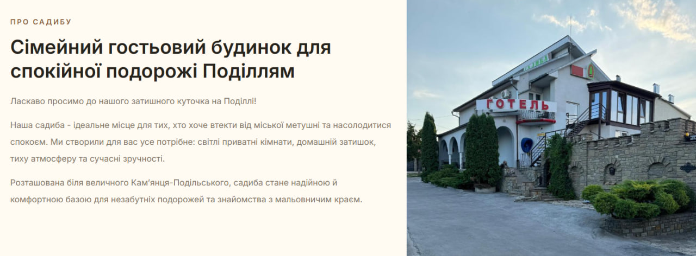

Вебпроєкт, розроблений для представлення готелю «Садиба» в мережі Інтернет. Сайт надає відвідувачам інформацію про готель, умови проживання, доступні послуги та контактні дані. Під час створення проєкту було реалізовано сучасний дизайн, зручну навігацію між сторінками та адаптивне відображення для різних пристроїв. Для розробки використано HTML, CSS та JavaScript, що забезпечило швидку роботу сайту та комфортну взаємодію користувачів із контентом.